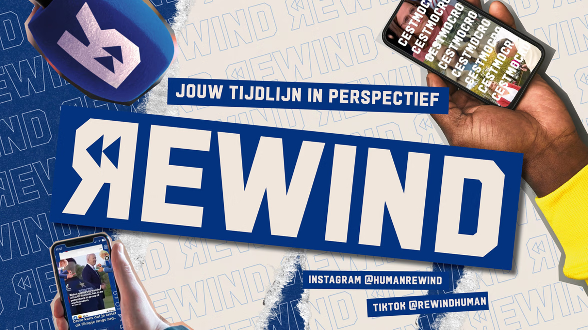

Context
Rewind is het journalistieke social-kanaal van HUMAN op NPO. Elke week vertaalt de redactie actuele nieuwsthema's naar korte video's voor TikTok, Instagram en YouTube. Studio Yoko is de vaste visuele partner — elke week opnieuw.
Probleem
Feeds vol AI-content en algoritmische prikkels. Jongeren scrollen er dwars doorheen — ook langs journalistieke content die er wél toe doet.
Ingewikkelde thema's vragen meer dan een tekst op beeld. Ze moeten visueel kloppen, een ritme hebben en meteen raak zijn — anders haken mensen af voor het eerste swipe voorbij is.
Inzicht

Oplossing
Samen met de redactie zoeken we elke week de kern van het verhaal: wat is de ene zin die moet blijven hangen? Daarop bouwen we een visuele opbouw die de kijker van het eerste tot het laatste frame meeneemt.
We leveren niet alleen animaties — we denken mee over structuur, pacing en de grafische keuzes die een video van goed naar onvergetelijk tillen.



Resultaat
De samenwerking loopt al meerdere seizoenen door. De visuele consistentie maakt Rewind direct herkenbaar in het feed — ongeacht het onderwerp van de week.